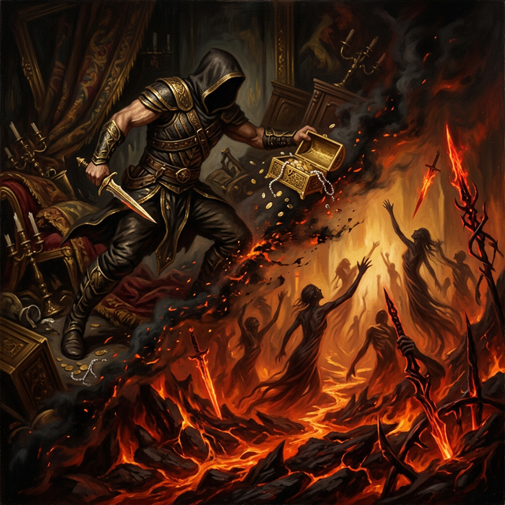
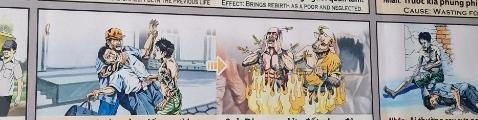

El Infierno de las Sombras The Hell of Shadows L'inferno delle ombre 阴影地狱 جحيم الظلال Ад теней Die Hölle der Schatten L'enfer des ombres 影の地獄 O Inferno das Sombras
El fuego que enciendes en otros, arderá en tu propia alma. The fire you ignite in others will burn in your own soul. Il fuoco che accendi negli altri brucerà nella tua anima. 你在别人身上点燃的火焰也会在你自己的灵魂中燃烧。 النار التي تشعلها في الآخرين سوف تشتعل في روحك. Огонь, который вы зажигаете в других, будет гореть и в вашей душе. Das Feuer, das du in anderen entzündest, wird in deiner eigenen Seele brennen. Le feu que vous allumez chez les autres brûlera dans votre propre âme. あなたが他人に灯す火は、あなた自身の魂にも燃え上がります。 O fogo que você acende nos outros queimará em sua própria alma.
Arrebatar la vida o el sustento de otro es una deuda que no se salda fácilmente. Es introducir en el universo una fuerza de destrucción que, por ley natural, debe regresar con la misma intensidad.
Snatching the life or livelihood of another is a debt that is not easily settled. It is introducing into the universe a force of destruction that, by natural law, must return with the same intensity.
Los murales son explícitos: un infierno de fuego y cuchillas. Representa un estado de conciencia de sufrimiento agudo; el alma arde en la culpa y el miedo que ella misma inyectó en el mundo.
The murals are explicit: a hell of fire and sharp blades. It represents a state of acute suffering consciousness; the soul burns in the guilt and fear it injected into the world.
El Vestido de Fuego
The Fire Dress
L'abito di fuoco
火礼服
فستان النار
Огненное платье
Das Feuerkleid
La robe de feu
ファイヤードレス
O vestido de fogo
Había un hombre implacable que construyó su poder sobre la sangre y el llanto de los inocentes. Creía que la crueldad era un escudo que nadie podría traspasar. Se reía de las lágrimas y no sentía ninguna piedad en el corazón...
Pero la vida es como un gran eco. Todo lo que lanzamos al abismo vuelve a nosotros con la misma fuerza vibratoria. Por eso, al cerrar los ojos, no encontró la nada; se halló atrapado en un valle de un calor asfixiante y un terror profundo. No eran castigos inventados ni demonios ajenos...
Eran todas y cada una de las agonías, miedos y gritos de quienes asesinó, concentrados alrededor suyo como un fuego abrasador que le gritaba la verdad. A través de este calor insoportable, la roca de su insensibilidad se fue fundiendo... hasta que, arrodillado frente a su propio dolor, suplicó el don de la compasión.
There was a ruthless man who built his power on the blood and tears of the innocent. He believed that cruelty was a shield that no one could penetrate. He laughed through tears and felt no pity in his heart...
But life is like a great echo. Everything we throw into the abyss returns to us with the same vibratory force. That is why, when he closed his eyes, he did not find anything; He found himself trapped in a valley of stifling heat and deep terror. They were not invented punishments or foreign demons...
They were each and every one of the agonies, fears and screams of those he murdered, concentrated around him like a burning fire that screamed the truth at him. Through this unbearable heat, the rock of his callousness melted... until, kneeling in front of his own pain, he begged for the gift of compassion.
C'era un uomo spietato che costruì il suo potere sul sangue e sulle lacrime degli innocenti. Credeva che la crudeltà fosse uno scudo che nessuno poteva penetrare. Rise tra le lacrime e non provò alcuna pietà nel suo cuore...
Ma la vita è come una grande eco. Tutto ciò che gettiamo nell'abisso ritorna a noi con la stessa forza vibratoria. Ecco perché, quando chiudeva gli occhi, non trovava nulla; Si ritrovò intrappolato in una valle di caldo soffocante e di profondo terrore. Non erano punizioni inventate o demoni stranieri...
Erano ognuna delle agonie, delle paure e delle urla di coloro che aveva ucciso, concentrate intorno a lui come un fuoco ardente che gli urlava la verità. Attraverso questo caldo insopportabile, la roccia della sua insensibilità si sciolse... finché, in ginocchio davanti al proprio dolore, implorò il dono della compassione.
有一个残忍的人，他的权力建立在无辜者的血和泪之上。他相信残酷是无人能够穿透的盾牌。他笑中带泪，心里却没有一丝怜悯……
但生命就像一个巨大的回声。我们扔进深渊的所有东西都会以同样的振动力返回到我们身上。所以，当他闭上眼睛时，他什么也没有发现；他发现自己被困在一个令人窒息的炎热和深深的恐惧之中。它们不是发明的惩罚或外来恶魔......
它们每一个都是他所谋杀的人的痛苦、恐惧和尖叫，集中在他周围，就像一团燃烧的火焰，向他尖叫着真相。在这难以忍受的高温下，他的冷酷之石融化了……直到他跪在自己的痛苦面前，乞求怜悯的恩赐。
كان هناك رجل لا يرحم بنى قوته على دماء ودموع الأبرياء. كان يعتقد أن القسوة كانت درعًا لا يستطيع أحد اختراقه. ضحك من بين الدموع ولم يشعر بأي شفقة في قلبه ...
ولكن الحياة هي مثل صدى عظيم. كل ما نلقيه في الهاوية يعود إلينا بنفس القوة الاهتزازية. ولهذا لما أغمض عينيه لم يجد شيئاً؛ وجد نفسه محاصرًا في وادٍ من الحرارة الخانقة والرعب العميق. لم تكن عقوبات مخترعة أو شياطين أجنبية ...
لقد كانت كل آلام ومخاوف وصرخات من قتلهم متمركزة حوله مثل نار مشتعلة تصرخ بالحقيقة في وجهه. ومن خلال هذا الحر الذي لا يطاق، ذابت صخرة قسوته... حتى ركع أمام آلامه، وتوسل إليه هدية الرحمة.
Жил-был безжалостный человек, который построил свою власть на крови и слезах невинных. Он считал, что жестокость — это щит, сквозь который никто не сможет пробить. Он смеялся сквозь слезы и не чувствовал жалости в сердце...
Но жизнь подобна великому эху. Все, что мы бросаем в бездну, возвращается к нам с той же вибрационной силой. Вот почему, закрыв глаза, он ничего не нашел; Он оказался в ловушке в долине удушающей жары и глубокого ужаса. Это не были придуманные наказания или чужие демоны...
Это были все до единого агонии, страхи и крики тех, кого он убил, сконцентрированные вокруг него, словно горящий огонь, который кричал ему правду. В этой невыносимой жаре скала его бессердечия плавилась... пока, стоя на коленях перед собственной болью, он не умолял о даре сострадания.
Es gab einen rücksichtslosen Mann, der seine Macht auf dem Blut und den Tränen Unschuldiger aufbaute. Er glaubte, dass Grausamkeit ein Schutzschild sei, den niemand durchdringen könne. Er lachte unter Tränen und empfand kein Mitleid in seinem Herzen ...
Aber das Leben ist wie ein großes Echo. Alles, was wir in den Abgrund werfen, kehrt mit der gleichen Schwingungskraft zu uns zurück. Deshalb fand er, als er die Augen schloss, nichts; Er befand sich gefangen in einem Tal drückender Hitze und tiefer Angst. Es handelte sich nicht um erfundene Strafen oder fremde Dämonen ...
Sie waren allesamt die Qualen, Ängste und Schreie derer, die er ermordet hatte, konzentriert um ihn herum wie ein brennendes Feuer, das ihm die Wahrheit entgegenbrüllte. Durch diese unerträgliche Hitze schmolz der Fels seiner Gefühllosigkeit ... bis er vor seinem eigenen Schmerz kniete und um die Gabe des Mitgefühls bettelte.
Il y avait un homme impitoyable qui a bâti son pouvoir sur le sang et les larmes d’innocents. Il croyait que la cruauté était un bouclier que personne ne pouvait pénétrer. Il a ri à travers ses larmes et n'a ressenti aucune pitié dans son cœur...
Mais la vie est comme un grand écho. Tout ce que nous jetons dans les abysses nous revient avec la même force vibratoire. C'est pourquoi, lorsqu'il ferma les yeux, il ne trouva rien ; Il s'est retrouvé piégé dans une vallée de chaleur étouffante et de profonde terreur. Ce n’étaient pas des punitions inventées ni des démons étrangers…
C'étaient chacune des angoisses, des peurs et des cris de ceux qu'il avait assassinés, concentrés autour de lui comme un feu brûlant qui lui criait la vérité. Sous cette chaleur insupportable, le roc de son insensibilité fondit... jusqu'à ce que, s'agenouillant devant sa propre douleur, il implore le don de la compassion.
罪のない人々の血と涙の上に権力を築いた冷酷な男がいた。彼は、残酷さは誰も突破できない盾であると信じていました。彼は涙を流しながら笑い、心の中では何の同情も感じなかった...
しかし、人生は大きな反響のようなものです。私たちが深淵に投げ込んだものはすべて、同じ振動力で戻ってきます。だからこそ、彼が目を閉じても何も見つかりませんでした。彼は、息詰まるような暑さと深い恐怖の谷に閉じ込められていることに気づきました。彼らは罰や外国の悪魔を発明したわけではありません...
それらは、彼が殺害した人々の苦しみ、恐怖、悲鳴のひとつひとつであり、真実を叫び続ける燃える火のように彼の周囲に集中していた。この耐え難い熱によって、彼の無神経な岩は溶けていきました…ついには、彼は自らの痛みの前にひざまずいて、慈悲の賜物を懇願しました。
Houve um homem cruel que construiu seu poder com base no sangue e nas lágrimas dos inocentes. Ele acreditava que a crueldade era um escudo que ninguém poderia penetrar. Ele riu em meio às lágrimas e não sentiu pena em seu coração...
Mas a vida é como um grande eco. Tudo o que jogamos no abismo volta para nós com a mesma força vibratória. Por isso, quando fechou os olhos, não encontrou nada; Ele se viu preso em um vale de calor sufocante e terror profundo. Não foram castigos inventados ou demônios estranhos...
Eram cada uma das agonias, medos e gritos daqueles que ele assassinou, concentrados ao seu redor como um fogo ardente que gritava a verdade para ele. Através deste calor insuportável, a rocha da sua insensibilidade derreteu... até que, ajoelhando-se diante da sua própria dor, ele implorou pelo dom da compaixão.
La Inspiración Original
The Original Inspiration
L'Ispirazione Originale
最初的灵感
الإلهام الأصلي
Оригинальное вдохновение
Die Ursprüngliche Inspiration
L'Inspiration Originale
元のインスピレーション
A Inspiração Original
La historia que hemos relatado en este capítulo está inspirada por el pasaje de la escena original de los murales «Tranh Nhân Quả» (Ilustraciones del Karma) del Templo Linh Ung en Da Nang, capturado en la imagen.
La storia che abbiamo raccontato in questo capitolo è ispirata al passaggio della scena originale dei murali “Tranh Nhân Quả” (Illustrazioni del Karma) del Tempio Linh Ung a Da Nang, catturati nell'immagine.
我们在本章中讲述的故事的灵感来自图像中捕获的岘港灵应寺“Tranh Nhân Quả”（业力插图）壁画的原始场景。
القصة التي رويناها في هذا الفصل مستوحاة من مقطع من المشهد الأصلي لجداريات "ترانه نهان كو" (الرسوم التوضيحية للكارما) لمعبد لينه أونغ في دا نانغ، الملتقطة في الصورة.
История, которую мы рассказали в этой главе, вдохновлена отрывком из оригинальной сцены фрески «Тран Нхан Ку» («Иллюстрации кармы») храма Линь Унг в Дананге, запечатленной на изображении.
Die Geschichte, die wir in diesem Kapitel erzählt haben, ist inspiriert von der Passage aus der Originalszene der Wandgemälde „Tranh Nhân Quả“ (Illustrationen von Karma) des Linh Ung-Tempels in Da Nang, die im Bild festgehalten ist.
L'histoire que nous avons racontée dans ce chapitre est inspirée du passage de la scène originale des peintures murales « Tranh Nhân Quả » (Illustrations du Karma) du temple Linh Ung à Da Nang, capturées dans l'image.
この章で私たちが語った物語は、ダナンのリンウン寺院の壁画「Tranh Nhân Quả」（カルマの図）の元のシーンの一節からインスピレーションを得て、画像に収められています。
A história que contamos neste capítulo é inspirada na passagem da cena original dos murais “Tranh Nhân Quả” (Ilustrações do Karma) do Templo Linh Ung em Da Nang, capturada na imagem.
The story we have related in this chapter is inspired by the passage from the original scene of the "Tranh Nhân Quả" (Karma Illustrations) murals at the Linh Ung Temple in Da Nang, captured in the image.

Como se puede apreciar en el pasaje extraído del mural, la causa y su efecto kármico están descritos originalmente en vietnamita y con una breve traducción al inglés. A continuación, te ofrecemos su traducción detallada en los distintos idiomas:
As can be seen in the passage extracted from the mural, the cause and its karmic effect are originally described in Vietnamese with a brief English translation. Below, we offer the detailed translation in different languages:
Come si può vedere nel passaggio estratto dal murale, la causa e il suo effetto karmico sono originariamente descritti in vietnamita con una breve traduzione in inglese. Di seguito offriamo la traduzione dettagliata in diverse lingue:
正如壁画所见，原因及其业报原本用越南语描述并配有简短英文翻译。以下是各种语言的详细翻译：
كما يمكن رؤيته في المقطع المقتبس من اللوحة الجدارية، فإن السبب وتأثيره الكارمي موصوفان في الأصل باللغة الفيتنامية مع ترجمة إنجليزية موجزة. نقدم أدناه الترجمة التفصيلية بلغات مختلفة:
Как видно из отрывка, взятого из фрески, причина и кармический эффект изначально описаны на вьетнамском языке с кратким английским переводом. Ниже мы предлагаем подробный перевод на разные языки:
Wie in der aus dem Wandgemälde entnommenen Passage zu sehen ist, werden die Ursache und ihre karmische Wirkung ursprünglich auf Vietnamesisch mit einer kurzen englischen Übersetzung beschrieben. Nachfolgend bieten wir die detaillierte Übersetzung in verschiedenen Sprachen an:
Comme on peut le voir dans le passage extrait de la fresque, la cause et son effet karmique sont décrits à l'origine en vietnamien avec une brève traduction en anglais. Ci-dessous, nous proposons la traduction détaillée dans différentes langues :
壁画から抽出された一節に見られるように、原因とそのカルマ的影響は元々ベトナム語で説明されており、短い英訳が添えられています。以下に、さまざまな言語での詳細な翻訳を示します。
Como pode ser visto na passagem extraída do mural, a causa e seu efeito cármico são originalmente descritos em vietnamita com uma breve tradução para o inglês. Abaixo, oferecemos a tradução detalhada em diferentes idiomas:
🇻🇳 Tiếng Việt:
Nguyên nhân: Kiếp trước làm kẻ trộm, kẻ giết người. | Tác dụng: Sanh vào địa ngục, chịu đau khổ do lửa và dao.
Traducción Recreada:
Causa: Ser un ladrón y asesino en la vida anterior.
Efecto: Trae renacimiento en el infierno y sufrimiento por fuego y cuchillos.
Recreated Translation:
Cause: Being a thief and murderer in the previous life.
Effect: Brings rebirth into hell and suffering from fire and knives.
Traduzione ricreata:
Causa: essere un ladro e un assassino nella vita precedente.
Effetto: porta la rinascita all'inferno e la sofferenza a causa del fuoco e dei coltelli.
重制翻译：
因：前世为盗贼、杀人犯。
果：投生地狱，受火刀之苦。
الترجمة المعاد إنشاؤها:
السبب: كونك لصًا وقاتلًا في الحياة السابقة.
التأثير: يجلب الميلاد الجديد في الجحيم والمعاناة من النار والسكاكين.
Воссозданный перевод:
Причина: Быть вором и убийцей в предыдущей жизни.
Эффект: Приносит перерождение в аду и страдания от огня и ножей.
Nachgebildete Übersetzung:
Ursache: Ein Dieb und Mörder im vorherigen Leben sein.
Wirkung: Bringt Wiedergeburt in der Hölle und Leiden durch Feuer und Messer.
Traduction recréée :
Cause : Être un voleur et un meurtrier dans la vie antérieure.
Effet : Apporte la renaissance en enfer et souffre du feu et des couteaux.
再作成された翻訳:
原因:前世で泥棒および殺人者であった。
結果:地獄での再生と火とナイフの苦しみをもたらす。
Tradução recriada:
Causa: Ser um ladrão e assassino na vida anterior.
Efeito: Traz renascimento no inferno e sofrimento com fogo e facas.
Análisis: Quien siembra dolor extremo, robo y asesinato, atrae hacia sí mismo un sufrimiento ardiente y cortante, un verdadero infierno personal diseñado para disolver su insensibilidad de piedra.
Analysis: He who sows extreme pain, theft and murder, attracts to himself a burning and cutting suffering, a true personal hell designed to dissolve his stone insensitivity.
Analisi: Colui che semina dolore estremo, furto e omicidio, attira a sé una sofferenza bruciante e tagliente, un vero inferno personale destinato a dissolvere la sua pietra insensibilità.
分析：播下极度痛苦、盗窃和谋杀的人，会给自己带来灼烧和割伤的痛苦，这是一个真正的个人地狱，旨在消除他的石头麻木不仁。
التحليل: من يزرع الألم الشديد والسرقة والقتل، يجذب إلى نفسه معاناة حارقة وقاطعة، جحيمًا شخصيًا حقيقيًا مصممًا لإذابة عدم إحساسه الحجري.
Анализ: Тот, кто сеет крайнюю боль, воровство и убийство, притягивает к себе жгучие и режущие страдания, настоящий личный ад, призванный растворить его каменную нечувствительность.
Analyse: Wer extremen Schmerz, Diebstahl und Mord sät, zieht brennendes und schneidendes Leid an sich, eine wahre persönliche Hölle, die dazu bestimmt ist, seine steinerne Gefühllosigkeit aufzulösen.
Analyse: Celui qui sème la douleur extrême, le vol et le meurtre, attire à lui une souffrance brûlante et coupante, un véritable enfer personnel destiné à dissoudre son insensibilité de pierre.
分析: 極度の苦痛、窃盗、殺人の種をまく者は、自分の石のような鈍感力を解消するために設計された、焼けつくような苦しみ、真の個人的な地獄を自分自身に引き寄せます。
Análise: Aquele que semeia dor extrema, roubo e assassinato, atrai para si um sofrimento ardente e cortante, um verdadeiro inferno pessoal projetado para dissolver sua insensibilidade pétrea.
Si quieres conocer más sobre el proyecto o colaborar, accede a nuestro Linktree.
If you want to know more about the project or collaborate, access our Linktree.
Se vuoi saperne di più sul progetto o collaborare, accedi al nostro Linktree.
如果您想了解有关该项目或合作的更多信息，请访问我们的 Linktree.
إذا كنت تريد معرفة المزيد عن المشروع أو التعاون، قم بالوصول إلى موقعنا Linktree.
Если вы хотите узнать больше о проекте или сотрудничать, посетите наш Linktree.
Wenn Sie mehr über das Projekt erfahren oder zusammenarbeiten möchten, greifen Sie auf unsere zu Linktree.
Si vous souhaitez en savoir plus sur le projet ou collaborer, accédez à notre Linktree.
プロジェクトについて詳しく知りたい場合、またはコラボレーションしたい場合は、こちらにアクセスしてください。 Linktree.
Se quiser saber mais sobre o projeto ou colaborar, acesse nosso Linktree.